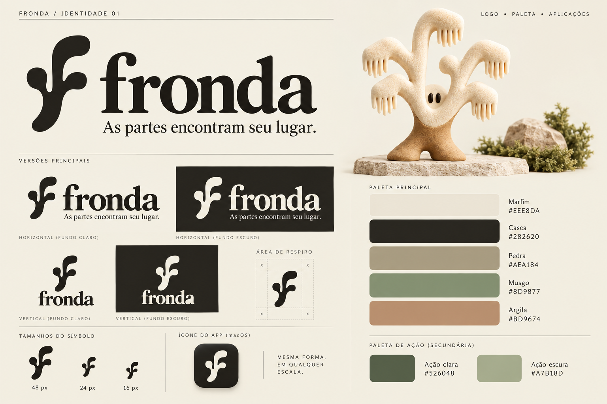
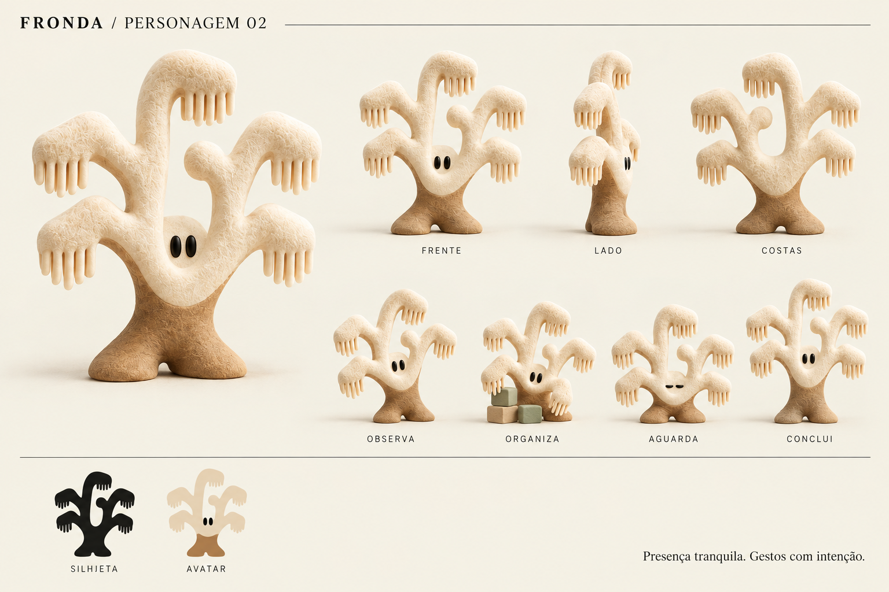
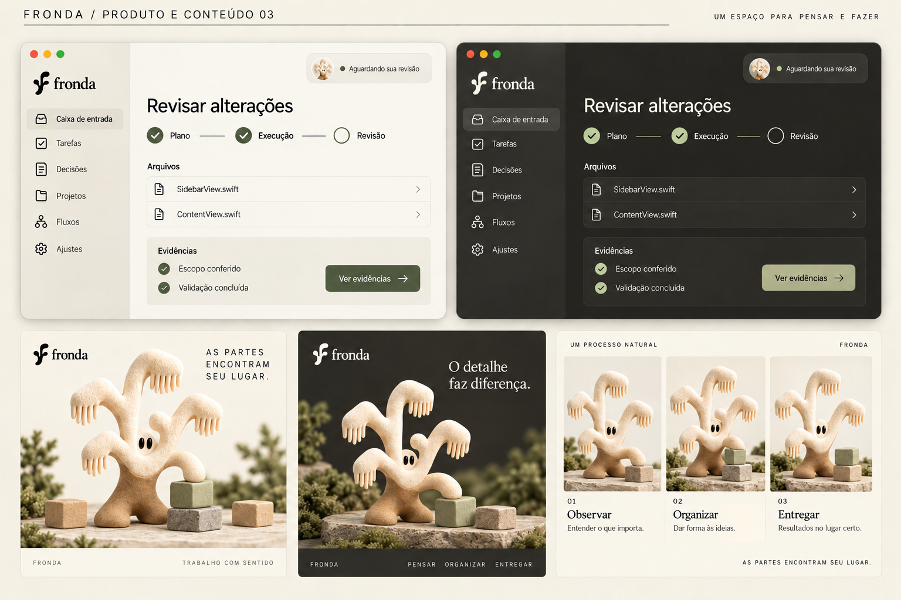
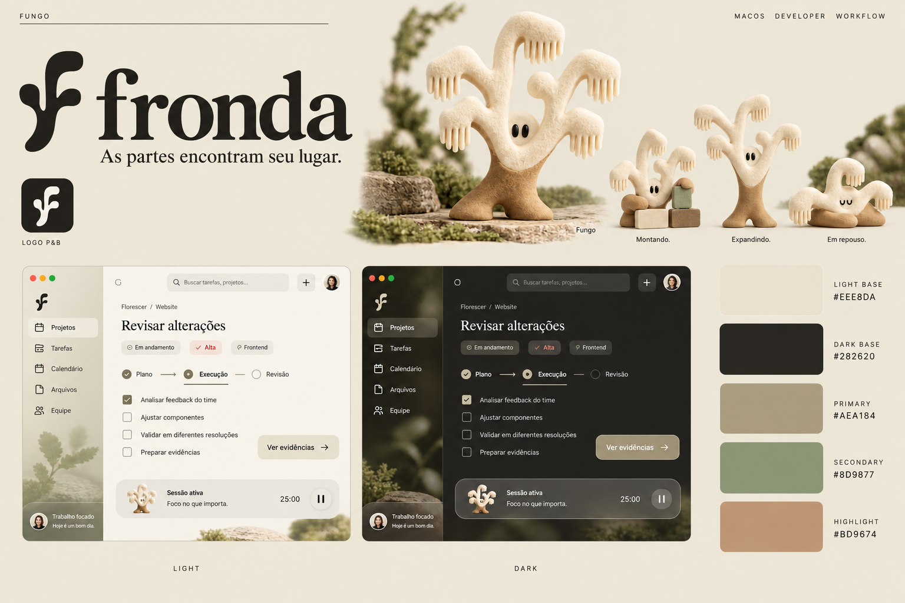

Prévia de cor · conteúdo ilustrativo
Revisar alterações
Seu trabalho está reunido. Você decide o próximo passo.
✓ Plano✓ Execução○ Revisão
Ver evidênciasAs partes encontram seu lugar.
Direção escolhida · nome, mascote e cores preservadosTrês pranchas para aprofundar o conjunto escolhido. O refinamento está proposto para avaliação; a arte-final e a implementação ainda não foram feitas.

O símbolo e a tipografia continuam na direção escolhida. A prancha propõe proporções, versões e cores; a arte-final vetorial vem depois da consolidação.

O mesmo personagem em vistas e gestos. Cinco ramos principais, dois olhos e base terrosa. Os detalhes entre poses ainda precisam ser fixados na arte-final.

Aplicação conceitual no produto, dois posts e quadros estáticos de vídeo. A interface usa nomes da navegação real; nenhum comportamento do app foi alterado.
#EEE8DA#282620#AEA184#8D9877#BD9674Seu trabalho está reunido. Você decide o próximo passo.
Alterne o tema no topo para comparar as cores sólidas. Botões usam musgo escuro no light e musgo claro no dark; os cinco tons originais permanecem na marca.
Contraste calculado de texto sobre botão: 6,07:1 no tema claro e 7,30:1 no escuro. Esses valores não validam vidro sobre fundos variáveis.
Serifa na marca, tipografia do sistema na interface. O símbolo assume os tamanhos em que o personagem perde detalhe.
Cinco ramos, dois olhos e gestos discretos. Na interface, presença pontual; em conteúdo, espaço para personalidade.
Navegação e controles recebem material translúcido. Texto, arquivos e evidências ficam em superfícies de leitura estáveis.
